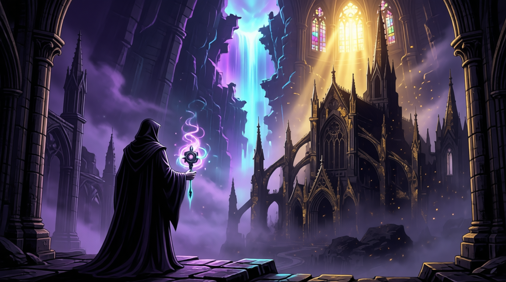
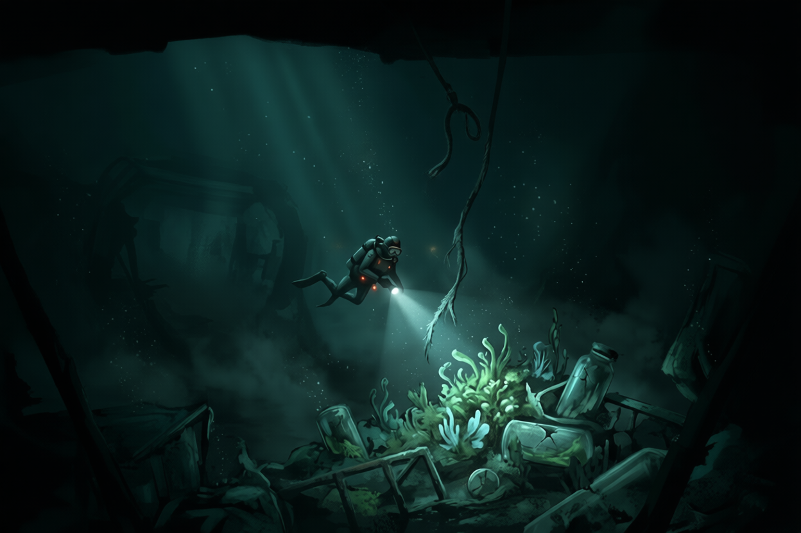

Narrative Design / Game Worldbuilding
I build worlds filled with secrets, characters shaped by their choices, and stories that unfold through play.
From dark fantasy worlds to mysteries built around forgotten truths, I explore how worldbuilding, character motivations, and meaningful player choices come together to create memorable experiences. I enjoy crafting stories that invite players to uncover secrets, question what they know, and shape the journey ahead.
Selected Worlds


Phantom Coven
The last survivor of a necromancer family seeks power in the Abyss, the very force the corrupt Solar Church condemns. Caught between the Church's golden light and the darkness they must embrace, they face a world that may already have decided they are the villain.

Sinking Regression
Betrayed and abandoned in the deep ocean, a scientist searches for strange plants that could make survival possible. Each death returns them to the beginning with their memories intact—but escaping the depths means uncovering the mystery behind their regression and the dangerous experiments hidden below.

RealmBound
Across a world of diverse fantasy civilizations, every culture draws upon the same life force: Essence. From martial arts and ritual magic to engineered constructs and evolved creatures, each civilization has developed its own way to wield it, shaping a world connected by a shared power but defined by different people and traditions.

JOAT — Jack of All Trades
Dark Fantasy / Narrative-Driven RPG
The Premise
Raised by an organization of assassins, the protagonist has learned to survive by avoiding direct confrontation. Though not necessarily weak, he sees himself as a coward and struggles to trust his own strength.
When he is branded a traitor, he is forced to flee the organization that raised him. His journey leads him to a mysterious master, a series of demanding challenges, and fragments of memories that hint at a future he cannot fully remember.
As the truth surrounding seven individuals and an approaching catastrophe begins to emerge, his goal changes. Rather than simply surviving, he must become strong enough to protect others and prepare for a future that may destroy the world.
World & Architecture
The story moves through distinct phases of the protagonist's growth rather than treating every major setting as a separate world. It begins with survival and escape, moves into training under a master, and progresses toward dojo challenges and a wider mystery involving seven individuals.
The assassin organization represents the protagonist's past and the techniques he must learn to confront. The master's training offers a different path forward, while the fragmented memories introduce uncertainty about time, identity, and the future.
The world gradually expands alongside the protagonist's understanding of his role in it.
The Protagonist
Former Assassin / Reluctant Hero
“I'm not strong enough to face them.”
He has been trained to kill, yet his instinct is to avoid direct confrontation. His central conflict is not simply becoming stronger; it is learning to stop defining himself by fear. The fractured memories surrounding his journey challenge his understanding of who he is and what he must do.
Quest Structure & Narrative Arc
JOAT follows the protagonist through a sequence of narrative phases, each introducing a new challenge to his identity and abilities.
The opening focuses on avoiding danger and interacting with the environment. As the pursuit by his former organization intensifies, the protagonist is forced to confront people who use the same techniques he does. After escaping, he begins training under a master, undertaking challenges that test his endurance and combat ability.
Later, dojo challenges and fragmented memories expand the story beyond personal survival. The protagonist discovers that seven individuals are connected to a future catastrophe. His intended path shifts toward saving and training them, gathering allies, and preparing a team capable of confronting the coming threat.
The structure ties character growth to the progression of the story: becoming stronger matters because it enables the protagonist to protect others, not simply defeat stronger enemies.
Design Rationale
The protagonist begins as someone who avoids confrontation, creating room for character growth to emerge through the player's journey. Rather than making the story solely about increasing combat strength, the narrative connects progression to a change in motivation: surviving alone gives way to protecting others.
The fragmented memories provide a mystery that can unfold gradually, while the seven individuals give the protagonist a goal beyond escaping his past. Structuring the story into phases helps each stage represent a meaningful shift in his journey.
Narrative progression
From escaping the assassin organization to training under a master and uncovering the mystery surrounding seven individuals.
Writing Sample
Demonstrating scene structure, dialogue formatting, character voice, and implementation of player agency.
Scene Objective
[PLACEHOLDER: Explain what this scene needs to accomplish narratively and mechanically. E.g., Establish the villain's motivation while giving the player a chance to bypass combat.]
Intended Player Experience
[PLACEHOLDER: How should the player feel? E.g., Tense, realizing their previous choice to spare a character has now backfired.]
Revision Rationale
[PLACEHOLDER: Describe a change made during editing. E.g., "Initially, the NPC explained their entire plan here. I revised it to let the environment communicate the danger, shortening the dialogue to maintain pacing."]
About the Author
[Placeholder: Your short professional biography. State clearly who you are, what kind of games you write for, and your primary narrative strengths.]
[Placeholder: Narrative Philosophy. Briefly explain how you approach storytelling in games. E.g., "I believe narrative isn't just text on a screen, but the context that gives gameplay mechanics meaning. I design branching systems that punish predictable choices and reward attentive players."]
[Placeholder: Mention your specific interests in dark fantasy, RPG systems, or character-driven design.]
Tools & Technical Workflow
- [PLACEHOLDER: Tool 1 (e.g., Twine/Ink)]
- [PLACEHOLDER: Tool 2 (e.g., Articy:Draft)]
- [PLACEHOLDER: Engine 1 (e.g., Unreal / Unity)]
- [PLACEHOLDER: Tool 4 (e.g., Jira/Confluence)]
Game Development Experience
[PLACEHOLDER: Studio / Project Name]
[PLACEHOLDER: 2023 - Present][PLACEHOLDER: Narrative Designer]
[PLACEHOLDER: 1-2 sentences describing your specific contributions, e.g., Wrote 50k+ words of systemic dialogue, implemented branching quests.]
[PLACEHOLDER: Game Jam / Indie Team]
[PLACEHOLDER: 2022][PLACEHOLDER: Writer & Scripter]
[PLACEHOLDER: Description of what you built and shipped.]
Initiate Contact
[Placeholder: One sentence indicating your current availability for narrative design, contract writing, or studio roles.]